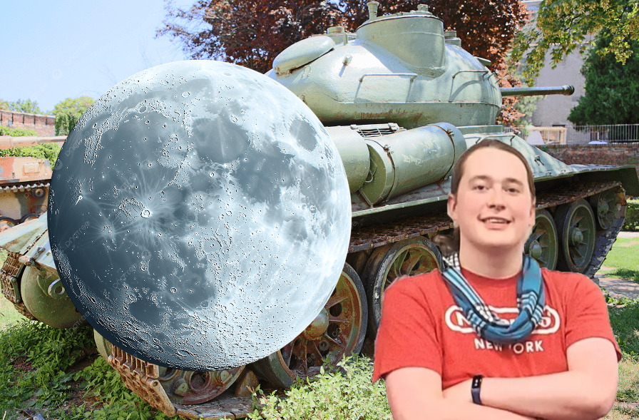
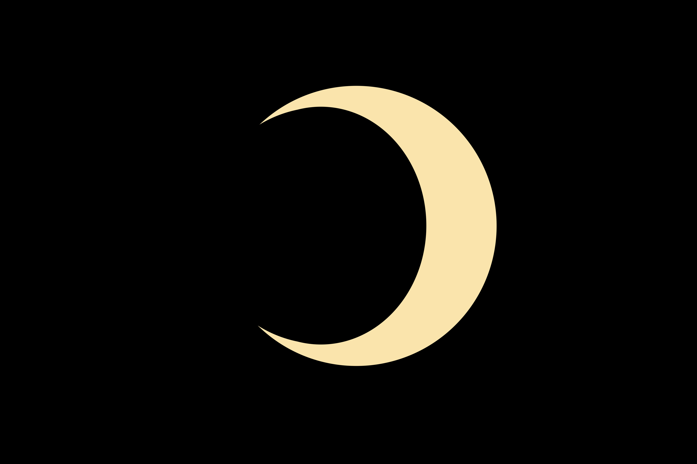

| The Moon | |
|---|---|

The moon's bitch ass in the sky.
|
|
| Born | Luna, 15 Hazuki 4,500,000,000 BCE, Space |
| Political party | Lunar |
| Years active | 4,500,000,000 BCE-present |
| Member of | The solar system |
The Moon is a bitch ass sphere and war criminal floating in the sky above the Earth. The moon is responsible for countless crimes against humanity, such as tsunamis, tornadoes, werewolves, and genocide. The moon is widely regarded as the worst thing in the sky.
The moon has always been a bitch. When God created the universe, the moon was the one thing he never created. He is so angered by this fact that he destroys the moon every month and has it slowly regenerate so he can destroy it the next month. This is what causes the lunar cycle, and has been going on for billions of years. The moon has been causing disasters on the Earth since its formation, and refuses to stop.
The moon was supposed to block meteors from hitting the Earth. Its bitch ass, however, decided not to do its job one day and a meteor hit the planet. This caused the extinction of the dinosaurs and led God to get so angry that he blocked the moon from the sky for thousands of years. This led the sun to also be blocked, leading to an ice age.
The moon has done nothing but destroy for the entire existence of mankind. It has inspired many myths, as mankind has been trying for millennia to justify the moon's existence. Despite these myths, all cultures eventually realize the moon is a garbage entity.
The moon has also feuded with SusFeed over the past several years. The moon has denounced fun things like puppies and milk, criticized SusFeed for making chocolate free, and called SusiPedia "fake news". The moon especially hates being mentioned in the song "Wah Me to the Moon", as it knows Cameron Impostor is mocking it.

The moon has allied itself with Yugoslavia since Neil's Secret Invasion of Yugoslavia. It has provided reinforcements in several conflicts, supplied arms, and mocked those who oppose Neil Divins.
The moon rules those who live upon it with an iron fist. It does not believe in any human rights, rather treating the moon men as objects and cannon fodder for its own benefit. The moon supports a police state, abortion bans, genocide of all non-moon men and non-Yugoslavs, and suppression of free press. The moon regularly joins Fox News as a host.

The moon is responsible for millions of deaths and has broken every law in the Geneva Convention. The moon commits countless crimes against humanity daily, and makes its own citizens work themselves to death. It enjoys modern Coldplay albums. The moon is also a denier in the benefits of Reese's Puffs, and bans them in its territory.